Десятичные дроби можно складывать, вычитать, умножать и делить. Также, десятичные дроби можно сравнивать между собой.
В этом уроке мы рассмотрим каждую из этих операций по отдельности. Но прежде, введем новое для нас понятие — целое число.
Целые числа это привычные для нас числа 0, 1, 2, 3, 4, 5 и так далее. То есть, числа не являющиеся десятичными дробями.
Существуют также отрицательные числа −1, −2, −3, −4, −5 — они тоже являются целыми числами, но изучать их мы пока не будем.
Содержание урока- Сложение десятичных дробей
- Разряды в десятичных дробях
- Вычитание десятичных дробей
- Умножение десятичных дробей
- Умножение десятичной дроби на целое число
- Умножение десятичных дробей на 10, 100, 1000
- Умножение десятичных дробей на 0,1 0,01 и 0,001
- Деление меньшего числа на большее. Продвинутый уровень.
- Деление чисел без остатка
- Деление десятичной дроби на целое число
- Деление десятичной дроби на десятичную дробь
- Деление десятичной дроби на 10, 100, 1000
- Деление десятичной дроби на 0,1, 0,01 и 0,001
- Задания для самостоятельного решения
Сложение десятичных дробей
Как мы знаем, десятичная дробь состоит из целой и дробной части. При сложении десятичных дробей, целые и дробные части складываются по отдельности.
Например, сложим десятичные дроби 3,2 и 5,3. Десятичные дроби удобнее складывать в столбик.
Запишем сначала эти две дроби в столбик, при этом целые части обязательно должны быть под целыми, а дробные под дробными. В школе это требование называют «запятая под запятой».
Запишем дроби в столбик так, чтобы запятая оказалась под запятой:
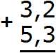
Складываем дробные части: 2 + 3 = 5. Записываем пятёрку в дробной части нашего ответа:
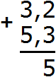
Теперь складываем целые части: 3 + 5 = 8. Записываем восьмёрку в целой части нашего ответа:
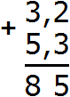
Теперь отделяем запятой целую часть от дробной. Для этого опять же соблюдаем правило «запятая под запятой»:
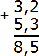
Получили ответ 8,5. Значит значение выражения 3,2 + 5,3 равно 8,5
\[3,2 + 5,3 = 8,5\]
На самом деле не всё так просто как показалось на первый взгляд. Здесь тоже имеются свои подводные камни, о которых мы сейчас поговорим.
Разряды в десятичных дробях
У десятичных дробей как и у обычных чисел есть свои разряды. Это разряды десятых, разряды сотых, разряды тысячных. При этом разряды начинаются после запятой.
Первая цифра после запятой отвечает за разряд десятых, вторая цифра после запятой за разряд сотых, третья цифра после запятой за разряд тысячных.
Разряды в десятичных дробях хранят в себе нéкоторую полезную информацию. В частности, они сообщают сколько в десятичной дроби десятых частей, сотых частей и тысячных частей.
Например, рассмотрим десятичную дробь 0,345
Позиция, где находится тройка, называется разрядом десятых
Позиция, где находится четвёрка, называется разрядом сотых
Позиция, где находится пятёрка, называется разрядом тысячных
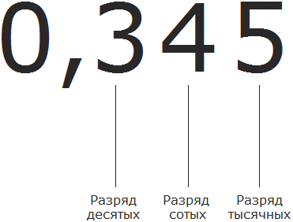
Посмотрим на данный рисунок. Видим, что в разряде десятых располагается тройка. Это говорит о том, что в десятичной дроби 0,345 содержится три десятых
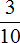
.Смотрим дальше. В разряде сотых располагается четвёрка. Это говорит о том, что в десятичной дроби 0,345 содержится четыре сотых
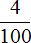
.Смотрим дальше. В разряде тысячных находится пятёрка. Это говорит о том, что в десятичной дроби 0,345 содержится пять тысячных
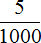
.Если мы сложим дроби , и то получим изначальную десятичную дробь 0,345
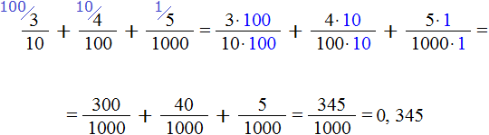
Сначала мы получили ответ
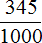
, но перевели его в десятичную дробь и получили 0,345.При сложении десятичных дробей соблюдаются те же правила, что и при сложении обычных чисел. Сложение десятичных дробей происходит по разрядам: десятые части складываются с десятыми частями, сотые с сотыми, тысячные с тысячными.
Поэтому при сложении десятичных дробей требуют соблюдать правило «запятая под запятой». Запятая под запятой обеспечивает тот самый порядок, в котором десятые части складываются с десятыми, сотые с сотыми, тысячные с тысячными.
Пример 1. Найти значение выражения 1,5 + 3,4
Записываем в столбик данное выражение, соблюдая правило «запятая под запятой»:
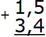
В первую очередь складываем дробные части 5 + 4 = 9. Записываем девятку в дробной части нашего ответа:
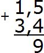
Теперь складываем целые части 1 + 3 = 4. Записываем четвёрку в целой части нашего ответа:
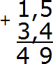
Теперь отделяем запятой целую часть от дробной. Для этого опять же соблюдаем правило «запятая под запятой»:
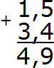
Получили ответ 4,9. Значит значение выражения 1,5 + 3,4 равно 4,9
\[1,5 + 3,4 = 4,9\]
Пример 2. Найти значение выражения: 3,51 + 1,22
Записываем в столбик данное выражение, соблюдая правило «запятая под запятой»
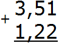
В первую очередь складываем дробную часть, а именно сотые части 1+2=3. Записываем тройку в сотой части нашего ответа:
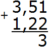
Теперь складываем десятые части 5+2=7. Записываем семёрку в десятой части нашего ответа:
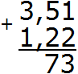
Теперь складываем целые части 3+1=4. Записываем четвёрку в целой части нашего ответа:
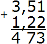
Отделяем запятой целую часть от дробной, соблюдая правило «запятая под запятой»:
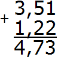
Получили ответ 4,73. Значит значение выражения 3,51 + 1,22 равно 4,73
\[3,51 + 1,22 = 4,73\]
Как и в обычных числах при сложении десятичных дробей может произойти переполнение разряда. В этом случае в ответе записывается одна цифра, а остальные переносят на следующий разряд.
Пример 3. Найти значение выражения 2,65 + 3,27
Записываем в столбик данное выражение:
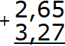
Складываем сотые части 5 + 7 = 12. Число 12 не поместится в сотой части нашего ответа. Поэтому в сотой части записываем цифру 2, а единицу переносим на следующий разряд:
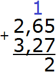
Теперь складываем десятые части 6+2=8 плюс единица, которая досталась от предыдущей операции, получим 9. Записываем цифру 9 в десятой части нашего ответа:
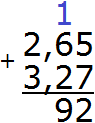
Теперь складываем целые части 2+3=5. Записываем цифру 5 в целой части нашего ответа:
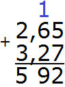
Отделяем запятой целую часть от дробной:
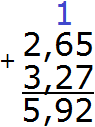
Получили ответ 5,92. Значит значение выражения 2,65 + 3,27 равно 5,92
\[2,65 + 3,27 = 5,92\]
Пример 4. Найти значение выражения 9,5 + 2,8
Записываем в столбик данное выражение
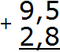
Складываем дробные части 5 + 8 = 13. Число 13 не поместится в дробной часть нашего ответа, поэтому сначала записываем цифру 3, а единицу переносим на следующий разряд, точнее переносим её к целой части:
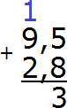
Теперь складываем целые части 9+2=11 плюс единица, которая досталась от предыдущей операции, получаем 12. Записываем число 12 в целой части нашего ответа:
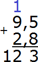
Отделяем запятой целую часть от дробной:
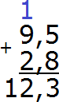
Получили ответ 12,3. Значит значение выражения 9,5 + 2,8 равно 12,3
\[9,5 + 2,8 = 12,3\]
При сложении десятичных дробей количество цифр после запятой в обеих дробях должно быть одинаковым. Если цифр не хватает, то эти места в дробной части заполняются нулями.
Пример 5. Найти значение выражения: 12,725 + 1,7
Прежде чем записывать в столбик данное выражение, сделаем количество цифр после запятой в обеих дробях одинаковым.
В десятичной дроби 12,725 после запятой три цифры, а в дроби 1,7 только одна. Значит в дроби 1,7 в конце нужно добавить два нуля. Тогда получим дробь 1,700. Теперь можно записать в столбик данное выражение и начать вычислять:
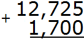
Складываем тысячные части 5+0=5. Записываем цифру 5 в тысячной части нашего ответа:
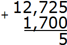
Складываем сотые части 2+0=2. Записываем цифру 2 в сотой части нашего ответа:
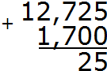
Складываем десятые части 7+7=14. Число 14 не поместится в десятой части нашего ответа. Поэтому сначала записываем цифру 4, а единицу переносим на следующий разряд:
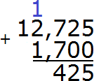
Теперь складываем целые части 12+1=13 плюс единица, которая досталась от предыдущей операции, получаем 14. Записываем число 14 в целой части нашего ответа:
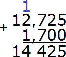
Отделяем запятой целую часть от дробной:
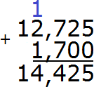
Получили ответ 14,425. Значит значение выражения 12,725+1,700 равно 14,425
\[12,725+ 1,700 = 14,425\]
Вычитание десятичных дробей
При вычитании десятичных дробей нужно соблюдать те же правила что и при сложении: «запятая под запятой» и «равное количество цифр после запятой».
Пример 1. Найти значение выражения 2,5 − 2,2
Записываем в столбик данное выражение, соблюдая правило «запятая под запятой»:
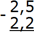
Вычисляем дробную часть 5−2=3. Записываем цифру 3 в десятой части нашего ответа:
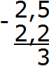
Вычисляем целую часть 2−2=0. Записываем ноль в целой части нашего ответа:
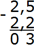
Отделяем запятой целую часть от дробной:
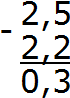
Получили ответ 0,3. Значит значение выражения 2,5 − 2,2 равно 0,3
\[2,5 - 2,2 = 0,3\]
Пример 2. Найти значение выражения 7,353 — 3,1
В этом выражении разное количество цифр после запятой. В дроби 7,353 после запятой три цифры, а в дроби 3,1 только одна. Значит в дроби 3,1 в конце нужно добавить два нуля, чтобы сделать количество цифр в обеих дробях одинаковым. Тогда получим 3,100.
Теперь можно записать в столбик данное выражение и вычислить его:
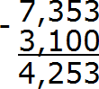
Получили ответ 4,253. Значит значение выражения 7,353 − 3,1 равно 4,253
\[7,353 — 3,1 = 4,253\]
Как и в обычных числах, иногда придётся занимать единицу у соседнего разряда, если вычитание станет невозможным.
Пример 3. Найти значение выражения 3,46 − 2,39
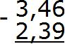
Вычитаем сотые части 6−9. От число 6 не вычесть число 9. Поэтому нужно занять единицу у соседнего разряда. Заняв единицу у соседнего разряда число 6 обращается в число 16. Теперь можно вычислить сотые части 16−9=7. Записываем семёрку в сотой части нашего ответа:
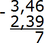
Теперь вычитаем десятые части. Поскольку мы заняли в разряде десятых одну единицу, то цифра, которая там располагалась, уменьшилась на одну единицу. Другими словами, в разряде десятых теперь не цифра 4, а цифра 3. Вычислим десятые части 3−3=0. Записываем ноль в десятой части нашего ответа:
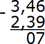
Теперь вычитаем целые части 3−2=1. Записываем единицу в целой части нашего ответа:
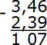
Отделяем запятой целую часть от дробной:
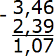
Получили ответ 1,07. Значит значение выражения 3,46−2,39 равно 1,07
\[3,46-2,39=1,07\]
Пример 4. Найти значение выражения 3−1,2
В этом примере из целого числа вычитается десятичная дробь. Запишем данное выражение столбиком так, чтобы целая часть десятичной дроби 1,2 оказалась под числом 3
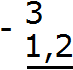
Теперь сделаем количество цифр после запятой одинаковым. Для этого после числа 3 поставим запятую и допишем один ноль:
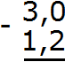
Теперь вычитаем десятые части: 0−2. От нуля не вычесть число 2. Поэтому нужно занять единицу у соседнего разряда. Заняв единицу у соседнего разряда, 0 обращается в число 10. Теперь можно вычислить десятые части 10−2=8. Записываем восьмёрку в десятой части нашего ответа:
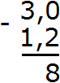
Теперь вычитаем целые части. Раньше в целой располагалось число 3, но мы заняли у него одну единицу. В результате оно обратилось в число 2. Поэтому из 2 вычитаем 1. 2−1=1. Записываем единицу в целой части нашего ответа:
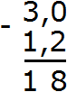
Отделяем запятой целую часть от дробной:
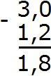
Получили ответ 1,8. Значит значение выражения 3−1,2 равно 1,8
\[3 - 1,2 = 1,8\]
Умножение десятичных дробей
Умножение десятичных дробей это просто и даже увлекательно. Чтобы перемножить десятичные дроби, нужно выполнить привычное для нас умножение, не обращая внимания на запятые.
Получив ответ, необходимо отделить запятой целую часть от дробной. Чтобы сделать это, надо посчитать количество цифр после запятой в обеих дробях, затем в ответе отсчитать справа столько же цифр и поставить запятую.
Пример 1. Найти значение выражения 2,5 × 1,5
Перемножим эти десятичные дроби как обычные числа, не обращая внимания на запятые. Чтобы не обращать внимания на запятые, можно на время представить, что они вообще отсутствуют:
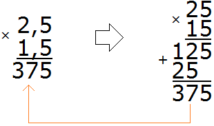
Получили 375. В этом числе необходимо отделить запятой целую часть от дробной. Для этого нужно посчитать количество цифр после запятой в дробях 2,5 и 1,5. В первой дроби после запятой одна цифра, во второй дроби тоже одна. Итого две цифры.
Возвращаемся к числу 375 и начинаем двигаться справа налево. Нам нужно отсчитать две цифры справа и поставить запятую:
Получили ответ 3,75. Значит значение выражения 2,5 × 1,5 равно 3,75
\[2,5 \times 1,5 = 3,75\]
Пример 2. Найти значение выражения 12,85 × 2,7
Перемножим эти десятичные дроби, не обращая внимания на запятые:
Получили 34695. В этом числе нужно отделить запятой целую часть от дробной. Для этого необходимо посчитать количество цифр после запятой в дробях 12,85 и 2,7. В дроби 12,85 после запятой две цифры, в дроби 2,7 одна цифра — итого три цифры.
Возвращаемся к числу 34695 и начинаем двигаться справа налево. Нам нужно отсчитать три цифры справа и поставить запятую:
Получили ответ 34,695. Значит значение выражения 12,85 × 2,7 равно 34,695
\[12,85 \times 2,7 = 34,695\]
Умножение десятичной дроби на целое число
Иногда возникают ситуации, когда требуется умножить десятичную дробь на целое число.
Чтобы перемножить десятичную дробь и число, нужно перемножить их, не обращая внимания на запятую в десятичной дроби. Получив ответ, необходимо отделить запятой целую часть от дробной. Для этого нужно посчитать количество цифр после запятой в десятичной дроби, затем в ответе отсчитать справа столько же цифр и поставить запятую.
Например, умножим 2,54 на 2
Умножаем десятичную дробь 2,54 на целое число 2, не обращая внимания на запятую:
Получили число 508. В этом числе нужно отделить запятой целую часть от дробной. Для этого необходимо посчитать количество цифр после запятой в дроби 2,54. В дроби 2,54 после запятой две цифры.
Возвращаемся к числу 508 и начинаем двигаться справа налево. Нам нужно отсчитать две цифры справа и поставить запятую:
Получили ответ 5,08. Значит значение выражения 2,54 × 2 равно 5,08
\[2,54 \times 2 = 5,08\]
Умножение десятичных дробей на 10, 100, 1000
Умножение десятичных дробей на 10, 100 или 1000 выполняется таким же образом, как и умножение десятичных дробей на обычные числа. Нужно выполнить умножение, не обращая внимания на запятую в десятичной дроби, затем в ответе отделить целую часть от дробной, отсчитав справа столько же цифр, сколько было цифр после запятой в десятичной дроби.
Например, умножим 2,88 на 10
Умножим десятичную дробь 2,88 на 10, не обращая внимания на запятую в десятичной дроби:
Получили 2880. В этом числе нужно отделить запятой целую часть от дробной. Для этого необходимо посчитать количество цифр после запятой в дроби 2,88. Видим, что в дроби 2,88 после запятой две цифры.
Возвращаемся к числу 2880 и начинаем двигаться справа налево. Нам нужно отсчитать две цифры справа и поставить запятую:
Получили ответ 28,80. Отбросим последний ноль — получим 28,8. Значит значение выражения 2,88×10 равно 28,8
\[2,88 \times 10 = 28,8\]
Есть и второй способ умножения десятичных дробей на 10, 100, 1000. Этот способ намного проще и удобнее. Он заключается в том, что запятая в десятичной дроби передвигается вправо на столько цифр, сколько нулей во множителе.
Например, решим предыдущий пример 2,88×10 этим способом. Не приводя никаких вычислений, сразу же смотрим на множитель 10. Нас интересует сколько в нём нулей. Видим, что в нём один ноль. Теперь в дроби 2,88 передвигаем запятую вправо на одну цифру, получим 28,8.
\[2,88 \times 10 = 28,8\]
Попробуем умножить 2,88 на 100. Сразу же смотрим на множитель 100. Нас интересует сколько в нём нулей. Видим, что в нём два нуля. Теперь в дроби 2,88 передвигаем запятую вправо на две цифры, получаем 288
\[2,88 \times 100 = 288\]
Попробуем умножить 2,88 на 1000. Сразу же смотрим на множитель 1000. Нас интересует сколько в нём нулей. Видим, что в нём три нуля. Теперь в дроби 2,88 передвигаем запятую вправо на три цифры. Третьей цифры там нет, поэтому мы дописываем ещё один ноль. В итоге получаем 2880.
\[2,88 \times 1000 = 2880\]
Умножение десятичных дробей на 0,1 0,01 и 0,001
Умножение десятичных дробей на 0,1, 0,01 и 0,001 происходит таким же образом, как и умножение десятичной дроби на десятичную дробь. Необходимо перемножить дроби, как обычные числа, и в ответе поставить запятую, отсчитав столько цифр справа, сколько цифр после запятой в обеих дробях.
Например, умножим 3,25 на 0,1
Умножаем эти дроби, как обычные числа, не обращая внимания на запятые:
Получили 325. В этом числе нужно отделить запятой целую часть от дробной. Для этого необходимо посчитать количество цифр после запятой в дробях 3,25 и 0,1. В дроби 3,25 после запятой две цифры, в дроби 0,1 одна цифра. Итого три цифры.
Возвращаемся к числу 325 и начинаем двигаться справа налево. Нам нужно отсчитать три цифры справа и поставить запятую. Отсчитав три цифры мы обнаруживаем, что цифры закончились. В этом случае нужно дописать один ноль и поставить запятую:
Получили ответ 0,325. Значит значение выражения 3,25 × 0,1 равно 0,325
\[3,25 \times 0,1 = 0,325\]
Есть и второй способ умножения десятичных дробей на 0,1, 0,01 и 0,001. Этот способ намного проще и удобнее. Он заключается в том, что запятая в десятичной дроби передвигается влево на столько цифр, сколько нулей во множителе.
Например, решим предыдущий пример 3,25 × 0,1 этим способом. Не приводя никаких вычислений сразу же смотрим на множитель 0,1. Нас интересует сколько в нём нулей. Видим, что в нём один ноль. Теперь в дроби 3,25 передвигаем запятую влево на одну цифру. Передвинув запятую на одну цифру влево мы видим, что перед тройкой больше нет никаких цифр. В этом случае дописываем один ноль и ставим запятую. В результате получаем 0,325
\[3,25 \times 0,1 = 0,325\]
Попробуем умножить 3,25 на 0,01. Сразу же смотрим на множитель 0,01. Нас интересует сколько в нём нулей. Видим, что в нём два нуля. Теперь в дроби 3,25 передвигаем запятую влево на две цифры, получаем 0,0325
\[3,25 \times 0,01 = 0,0325\]
Попробуем умножить 3,25 на 0,001. Сразу же смотрим на множитель 0,001. Нас интересует сколько в нём нулей. Видим, что в нём три нуля. Теперь в дроби 3,25 передвигаем запятую влево на три цифры, получаем 0,00325
\[3,25 \times 0,001 = 0,00325\]
Нельзя путать умножение десятичных дробей на 0,1, 0,001 и 0,001 с умножением на 10, 100, 1000. Типичная ошибка большинства людей.
При умножении на 10, 100, 1000 запятая переносится вправо на столько же цифр сколько нулей во множителе.
А при умножении на 0,1, 0,01 и 0,001 запятая переносится влево на столько же цифр сколько нулей во множителе.
Если на первых порах это сложно запомнить, можно пользоваться первым способом, в котором умножение выполняется как с обычными числами. В ответе нужно будет отделить целую часть от дробной, отсчитав справа столько же цифр, сколько цифр после запятой в обеих дробях.
Деление меньшего числа на большее. Продвинутый уровень.
В одном из предыдущих уроков мы сказали, что при делении меньшего числа на большее получается дробь, в числителе которой делимое, а в знаменателе – делитель.
Например, чтобы разделить одно яблоко на двоих, нужно в числитель записать 1 (одно яблоко), а в знаменатель записать 2 (двое друзей). В результате получим дробь \(\frac{1}{2}\). Значит каждому другу достанется по \(\frac{1}{2}\) яблока. Другими словами, по половине яблока. Дробь \(\frac{1}{2}\) это ответ к задаче «как разделить одно яблоко на двоих»
Оказывается, можно решать эту задачу и дальше, если разделить 1 на 2. Ведь дробная черта в любой дроби означает деление, а значит и в дроби \(\frac{1}{2}\) это деление разрешено. Но как? Мы ведь привыкли к тому, что делимое всегда больше делителя. А здесь наоборот, делимое меньше делителя.
Всё станет ясным, если вспомнить, что дробь означает дробление, деление, разделение. А значит и единица может быть раздроблена на сколько угодно частей, а не только на две части.
При разделении меньшего числа на большее получается десятичная дробь, в которой целая часть будет 0 (нулевой). Дробная часть же может быть любой.
Итак, разделим 1 на 2. Решим этот пример уголком:
Единицу на два просто так нацело не разделить. Если задать вопрос «сколько двоек в единице», то ответом будет 0. Поэтому в частном записываем 0 и ставим запятую:
Теперь как обычно умножаем частное на делитель, чтобы вытащить остаток:
Настал момент, когда единицу можно дробить на две части. Для этого справа от полученной единички дописываем ещё один ноль:
Получили 10. Делим 10 на 2, получаем 5. Записываем пятёрку в дробной части нашего ответа:
Теперь вытаскиваем последний остаток, чтобы завершить вычисление. Умножаем 5 на 2, получаем 10

Получили ответ 0,5. Значит дробь \(\frac{1}{2}\) равна 0,5
Половину яблока \(\frac{1}{2}\) можно записать и с помощью десятичной дроби 0,5. Если сложить эти две половинки (0,5 и 0,5), мы опять получим изначальное одно целое яблоко:
Этот момент также можно понять, если представить, как 1 см делится на две части. Если 1 сантиметр разделить на 2 части, то получится 0,5 см
Пример 2. Найти значение выражения 4 : 5
Сколько пятёрок в четвёрке? Нисколько. Записываем в частном 0 и ставим запятую:
Умножаем 0 на 5, получаем 0. Записываем ноль под четвёркой. Сразу же вычитаем этот ноль из делимого:
Теперь начнём дробить (делить) четвёрку на 5 частей. Для этого справа от 4 дописываем ноль и делим 40 на 5, получаем 8. Записываем восьмёрку в частном.
Завершаем пример, умножив 8 на 5, и получив 40:
Получили ответ 0,8. Значит значение выражения 4 : 5 равно 0,8
Пример 3. Найти значение выражения 5 : 125
Сколько чисел 125 в пятёрке? Нисколько. Записываем 0 в частном и ставим запятую:
Умножаем 0 на 125, получаем 0. Записываем 0 под пятёркой. Сразу же вычитаем из пятёрки 0
Теперь начнём дробить (делить) пятёрку на 125 частей. Для этого справа от этой пятёрки запишем ноль:
Делим 50 на 125. Сколько чисел 125 в числе 50? Нисколько. Значит в частном опять записываем 0
Умножаем 0 на 125, получаем 0. Записываем этот ноль под 50. Сразу же вычитаем 0 из 50
Теперь делим число 50 на 125 частей. Для этого справа от 50 запишем ещё один ноль:
Делим 500 на 125. Сколько чисел 125 в числе 500. В числе 500 четыре числа 125. Записываем четвёрку в частном:
Завершаем пример, умножив 4 на 125, и получив 500
Получили ответ 0,04. Значит значение выражения 5 : 125 равно 0,04
Деление чисел без остатка
В уроке деление мы научились делить числа с остатком. Например, чтобы разделить 9 на 5, мы поступали следующим образом:
и далее говорили, что «девять разделить на пять будет один и четыре в остатке».
Теперь мы получили необходимые знания, чтобы разделить 9 на 5 без остатка. Наша задача раздробить остаток 4 на 5 частей. Другими словами, разделить меньшее число на большее.
Итак, поставим в частном после единицы запятую, тем самым указывая, что деление целых частей закончилось и мы приступаем к дробной части:
Допишем ноль к остатку 4
Теперь делим 40 на 5, получаем 8. Записываем восьмёрку в частном:
Что делать дальше мы уже знаем. Вытаскиваем остаток (если есть). Умножаем восьмёрку на делитель 5, и записываем полученный результат под 40:
40−40=0. Получили 0 в остатке. Значит деление на этом полностью завершено. При делении 9 на 5 получается десятичная дробь 1,8:
\[9 : 5 = 1,8\]
Пример 2. Разделить 84 на 5 без остатка
Сначала разделим 84 на 5 как обычно с остатком:
Получили в частном 16 и еще 4 в остатке. Теперь разделим этот остаток на 5. Поставим в частном запятую, а к остатку 4 допишем 0
Теперь делим 40 на 5, получаем 8. Записываем восьмерку в частном после запятой:
и завершаем пример, проверив есть ли еще остаток:
Деление десятичной дроби на целое число
Десятичная дробь, как мы знаем состоит из целой и дробной части.
При делении десятичной дроби на целое число в первую очередь нужно:
- разделить целую часть десятичной дроби на это число;
- после того, как целая часть будет разделена, нужно в частном сразу же поставить запятую и продолжить вычисление, как в обычном делении.
Например, разделим 4,8 на 2
Запишем этот пример уголком:
Теперь разделим целую часть на 2. Четыре разделить на два будет два. Записываем двойку в частном и сразу же ставим запятую:
Теперь умножаем частное на делитель и смотрим есть ли остаток от деления:
4−4=0. Остаток равен нулю. Ноль пока не записываем, поскольку решение не завершено. Далее продолжаем вычислять, как в обычном делении. Сносим 8 и делим её на 2
8 : 2 = 4. Записываем четвёрку в частном и сразу умножаем её на делитель:
Получили ответ 2,4. Значение выражения 4,8 : 2 равно 2,4
Пример 2. Найти значение выражения 8,43 : 3
Делим 8 на 3, получаем 2. Сразу же ставим запятую после двойки:
Теперь умножаем частное на делитель 2 × 3 = 6. Записываем шестёрку под восьмёркой и находим остаток:
Далее продолжаем вычислять, как в обычном делении. Сносим 4
Делим 24 на 3, получаем 8. Записываем восьмёрку в частном. Сразу же умножаем её на делитель, чтобы найти остаток от деления:
24−24=0. Остаток равен нулю. Ноль пока не записываем. Сносим последнюю тройку из делимого и делим на 3, получим 1. Сразу же умножаем 1 на 3, чтобы завершить этот пример:
Получили ответ 2,81. Значит значение выражения 8,43 : 3 равно 2,81
Деление десятичной дроби на десятичную дробь
Чтобы разделить десятичную дробь на десятичную дробь, надо в делимом и в делителе перенести запятую вправо на столько же цифр, сколько их после запятой в делителе, и затем выполнить деление на целое число.
Например, разделим 5,95 на 1,7
Запишем уголком данное выражение
Теперь в делимом и в делителе перенесём запятую вправо на столько же цифр, сколько их после запятой в делителе. В делителе после запятой одна цифра. Значит мы должны в делимом и в делителе перенести запятую вправо на одну цифру. Переносим:
После перенесения запятой вправо на одну цифру десятичная дробь 5,95 обратилась в дробь 59,5. А десятичная дробь 1,7 после перенесения запятой вправо на одну цифру обратилась в целое число 17. А как делить десятичную дробь на целое число мы уже знаем. Дальнейшее вычисление не составляет особого труда:
Запятая переносится вправо с целью облегчить деление. Это допускается по причине того, что при умножении или делении делимого и делителя на одно и то же число, частное не меняется. Что это значит?
Это одна из интересных особенностей деления. Его называют свойством частного. Рассмотрим выражение 9 : 3 = 3. Если в этом выражении делимое и делитель умножить или разделить на одно и то же число, то частное 3 не изменится.
Давайте умножим делимое и делитель на 2, и посмотрим, что из этого получится:
\[(9 \times 2) : (3 \times 2) = 18 : 6 = 3\]
Как видно из примера, частное не поменялось.
Тоже самое происходит, когда мы переносим запятую в делимом и в делителе. В предыдущем примере, где мы делили 5,91 на 1,7 мы перенесли в делимом и делителе запятую на одну цифру вправо.
После переноса запятой, дробь 5,91 преобразовалась в дробь 59,1 а дробь 1,7 преобразовалась в целое число 17. На самом деле здесь происходило умножение на 10. Вот как это выглядело:
\[5,91 \times 10 = 59,1\]
\[1,7 \times 10 = 17\]
Поэтому от количества цифр после запятой в делителе зависит то, на что будет умножено делимое и делитель. Другими словами, от количества цифр после запятой в делителе будет зависеть то, на сколько цифр в делимом и в делителе запятая будет перенесена вправо.
Деление десятичной дроби на 10, 100, 1000
Деление десятичной дроби на 10, 100, или 1000 осуществляется таким же образом, как и деление десятичной дроби на целое число.
Например, разделим 2,1 на 10. Решим этот пример уголком:
Но есть и второй способ. Он более лёгкий. Суть этого способа в том, что запятая в делимом переносится влево на столько цифр, сколько нулей в делителе.
Решим предыдущий пример этим способом. 2,1 : 10. Смотрим на делитель. Нас интересует сколько в нём нулей. Видим, что там один ноль. Значит в делимом 2,1 нужно перенести запятую влево на одну цифру. Переносим запятую влево на одну цифру и видим, что там больше не осталось цифр. В этом случае перед цифрой дописываем ещё один ноль. В итоге получаем 0,21
\[2,1 : 10 = 0,21\]
Попробуем разделить 2,1 на 100. В числе 100 два нуля. Значит в делимом 2,1 надо перенести запятую влево на две цифры:
\[2,1 : 100 = 0,021\]
Попробуем разделить 2,1 на 1000. В числе 1000 три нуля. Значит в делимом 2,1 надо перенести запятую влево на три цифры:
\[2,1 : 1000 = 0,0021\]
Деление десятичной дроби на 0,1, 0,01 и 0,001
Деление десятичной дроби на 0,1, 0,01, и 0,001 осуществляется таким же образом, как и деление десятичной дроби на десятичную дробь. В делимом и в делителе надо перенести запятую вправо на столько цифр, сколько их после запятой в делителе.
Например, разделим 6,3 на 0,1. В первую очередь перенесём запятые в делимом и в делителе вправо на столько же цифр, сколько их после запятой в делителе. В делителе после запятой одна цифра. Значит переносим запятые в делимом и в делителе вправо на одну цифру.
После перенесения запятой вправо на одну цифру, десятичная дробь 6,3 превращается в целое число 63, а десятичная дробь 0,1 после перенесения запятой вправо на одну цифру превращается в единицу. А разделить 63 на 1 очень просто:
\[63 : 1 = 63\]
Значит значение выражения 6,3 : 0,1 равно 63
\[6,3 : 0,1 = 63\]
Но есть и второй способ. Он более лёгкий. Суть этого способа в том, что запятая в делимом переносится вправо на столько цифр, сколько нулей в делителе.
Решим предыдущий пример этим способом. 6,3 : 0,1. Смотрим на делитель. Нас интересует сколько в нём нулей. Видим, что там один ноль. Значит в делимом 6,3 нужно перенести запятую вправо на одну цифру. Переносим запятую вправо на одну цифру и получаем 63
\[6,3 : 0,1 = 63\]
Попробуем разделить 6,3 на 0,01. В делителе 0,01 два нуля. Значит в делимом 6,3 надо перенести запятую вправо на две цифры. Но в делимом после запятой только одна цифра. В этом случае в конце нужно дописать ещё один ноль. В результате получим 630
\[6,3 : 0,01 = 630\]
Попробуем разделить 6,3 на 0,001. В делителе 0,001 три нуля. Значит в делимом 6,3 надо перенести запятую вправо на три цифры:
\[6,3 : 0,001 = 6300\]
Задания для самостоятельного решения
Показать решение
Показать решение
Показать решение
Показать решение
Показать решение
Показать решение
Показать решение
Показать решение
Показать решение
Показать решение
Показать решение
Показать решение
Показать решение
Показать решение